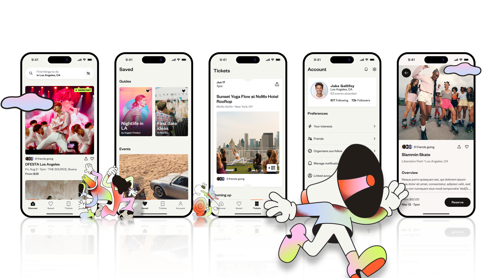
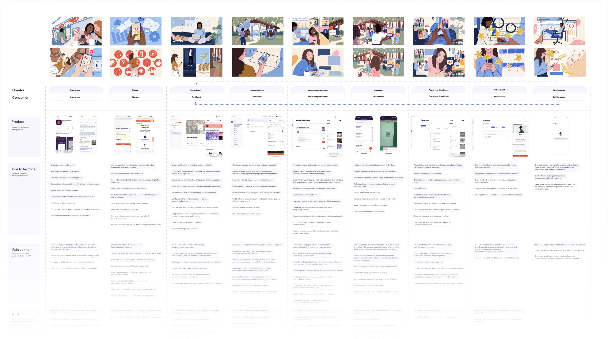

Eventbrite App
Rebuilt Eventbrite's consumer app around discovery, turning a ticket wallet into a reason to open the app.

The problem
Eventbrite powered millions of events, but consumers opened the app to show a ticket, not to find something to do. Discovery was fragmented, and mobile engagement was declining against mobile-first competitors.
The business needed the app to drive demand for creators, not just fulfil it.
The approach
Repositioned the app from transaction to discovery: a Discover tab built on curated It-Lists from local tastemakers in London, New York, Los Angeles and Melbourne; contact sync to see which events friends are attending; video and social signals in recommendations.
Rebuilt the interface on a modular, card-based design system so the product team could extend it after launch, and launched it alongside the brand refresh as a single moment.
Ran a three-month beta to prove revenue impact before global rollout.
Results

Leadership
Built and led a 120-person organization spanning product design, brand, design systems, UX research, innovation and design operations, reporting to the CPO.
Partnered with the CPO and CMO on the product vision, brought in Instrument as an extension of the in-house team, and held the bar on a single system across product and brand so both launched as one story.